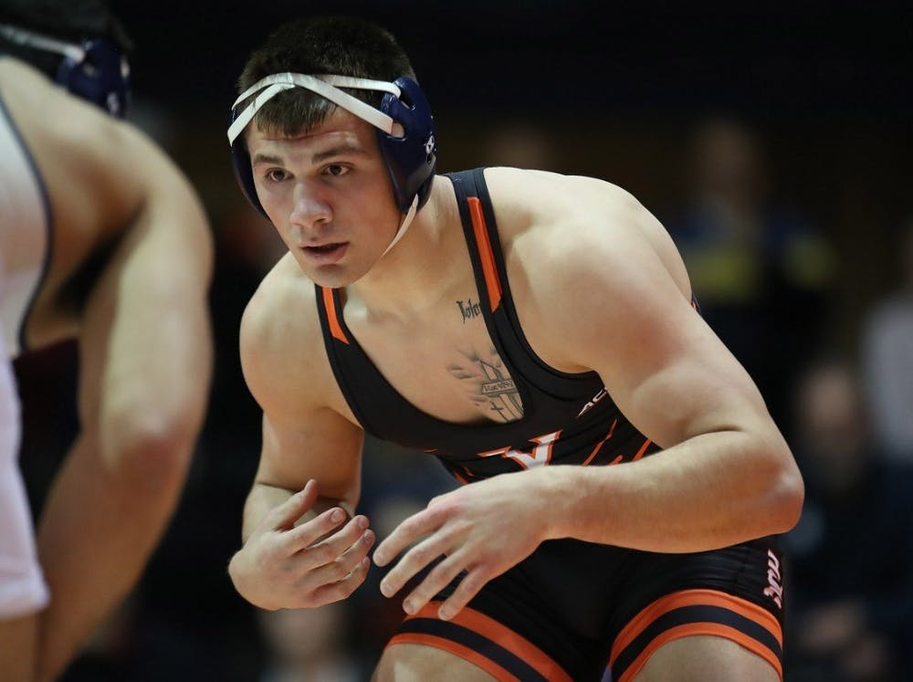

By Chad Whych | 02/17/2020

Following a close loss at home to in-state rival No. 7 Virginia Tech Jan. 31, Virginia wrestling travelled north to the Fitzgerald Field House for a dual against ACC opponent No. 10 Pittsburgh.
The Panthers (8-3, 2-1 ACC) came into this meet as a heavy favorite over the Cavaliers (7-5, 0-3 ACC) who have yet to win an ACC dual. In program history, Pittsburgh has only lost to the Cavaliers once — a 17-16 Virginia victory in Charlottesville back in 2015.
Despite coming off a loss and the odds being stacked against the visiting Cavaliers, senior captain and two-time All-American Jack Mueller led by example. Mueller — currently ranked second in the country at 125 pounds — opened up the dual by defeating Pittsburgh redshirt freshman Louis Newell by technical fall. This technical fall marks Mueller’s 11th win of the season and his eighth bonus-point victory.
Despite Mueller’s momentum-building opening performance, the Cavaliers would not win again for another two matches. After a couple of losses, Virginia rebounded through sophomore Denton Spencer in the 149-pound weight class. Spencer began the final period against Pittsburgh sophomore Dallas Bulsak in the top position. He displayed strong technique by riding out Bulsak for the entirety of the third period, giving him a well-deserved 1-0 riding time victory and handing the Cavaliers an early 8-6 lead.
The Panthers responded well and ultimately took control of the dual. Pittsburgh went on to win five of the final six matches of the meet. These victories even became emotional. During the 174-pound bout between Virginia redshirt freshman Victor Marcelli and Pittsburgh junior Gregg Harvey, the high tensions caused the Cavaliers to lose a team point. Virginia’s bench received a conduct violation during the match which forced the point deduction.
Virginia’s sole win out of the final six matches was produced by junior Jay Aiello. Aiello wrestled hard for a narrow 3-1 victory over Pittsburgh senior Kellan Stout. This marks Aiello’s eighth straight win of the year. He has also won 12 of his last 13 matches, pushing him to a 23-4 season record. With these wins, Aiello looks to continue moving up the rankings, as he currently occupies the No. 10 spot.
Overall, Virginia seemed to be outmatched in this dual, despite wins from standouts Mueller, Spencer and Aiello. However, Coach Steve Garland was still optimistic about the team’s future.
“Pitt is a very tough team,” Garland said. “I have a lot of respect for Keith Gavin and his staff. They do a great job and tonight their kids out-performed ours. We have two matches left. Our kids need to make a decision on how they want to figure out this regular season. Thankfully, there is still a lot of wrestling left.”
The Cavaliers will need to make that decision this week as they take on Duke Friday in Durham, N.C. for their next ACC matchup. The dual with the Blue Devils could be the exact confidence booster that the Cavaliers need after facing three straight top-10 opponents. Duke has yet to win a single dual this season. However, the Cavaliers should not underestimate their opponent on matchday.